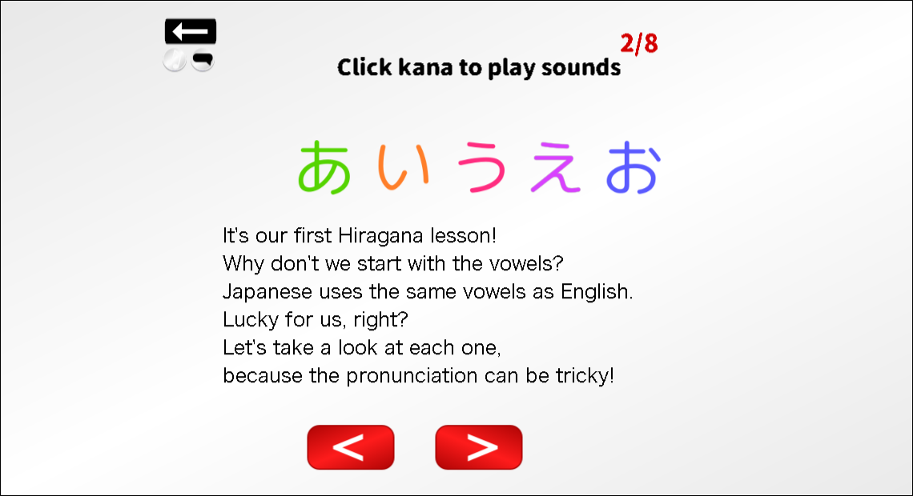
Let's Learn Japanese!
Let's Learn Japanese! Hiragana
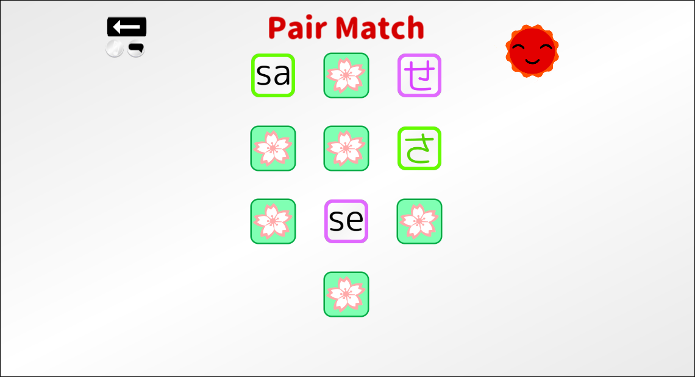
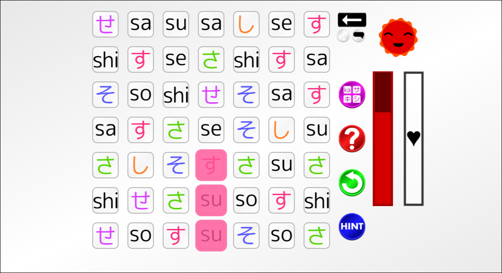
Let's Learn Japanese! Hiragana teaches you all the characters of the hiragana alphabet, as well as their variations and combinations.
You'll practice each character by playing fun mini-games, and you'll be reading Japanese before you know it.
Let's Learn Japanese! Katakana
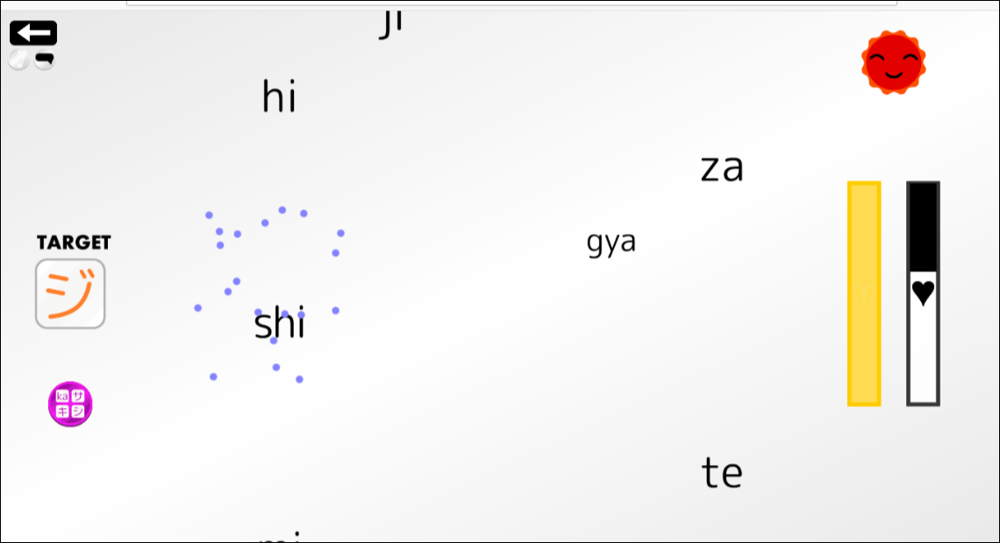
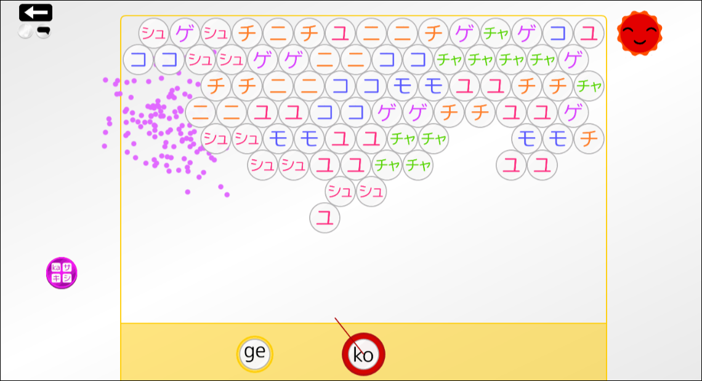
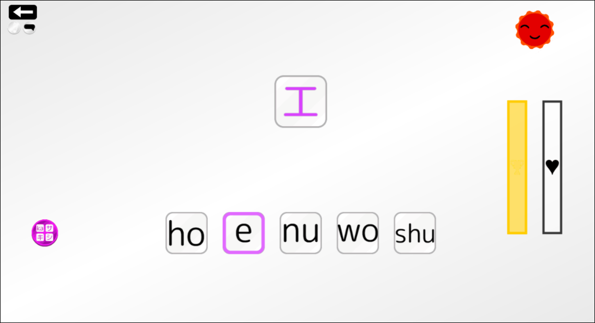
Let's Learn Japanese! Katakana teaches all the characters of the katakana alphabet, as well as their variations and combinations.
I recommend studying katakana after hiragana, because it's a little more difficult!
Let's Learn Japanese! Vocabulary
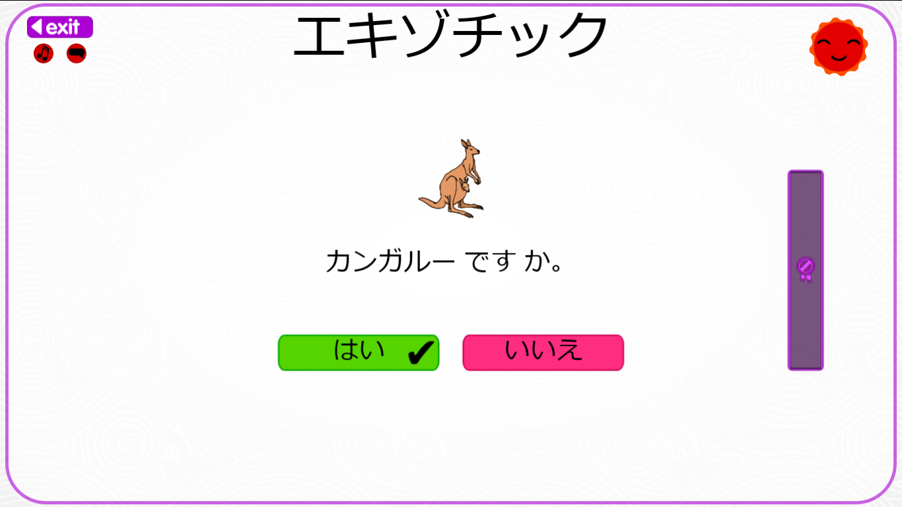
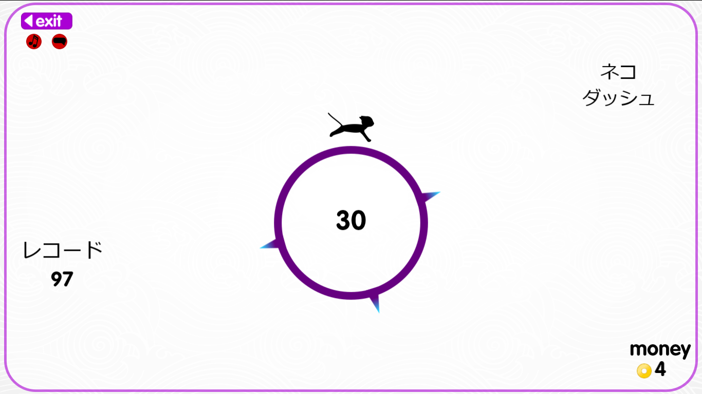
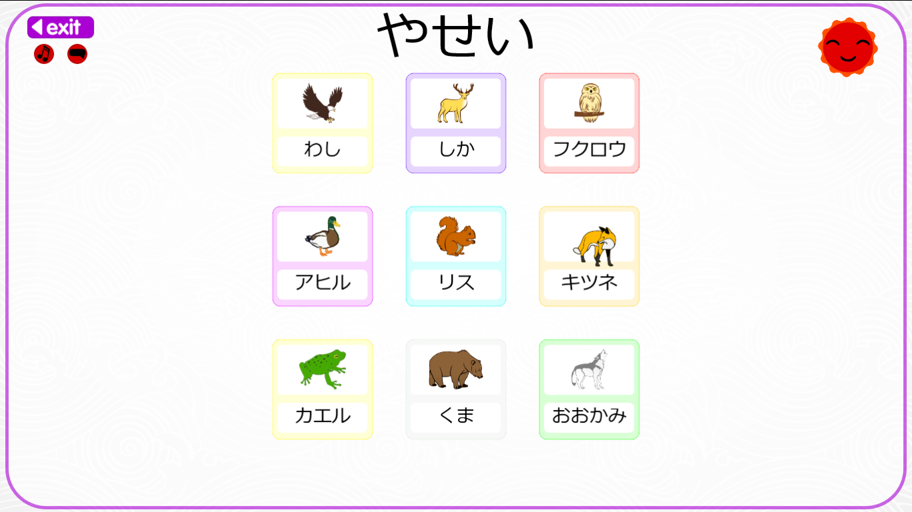
Let's Learn Japanese! Vocabulary teaches over 200 Japanese words.
Learn the names of everyday objects, food, numbers, animals, shapes and more.
As you study, you'll earn coins which you can use to unlock mini-games, art and music.
Let's Learn Japanese! Kanji Sudoku
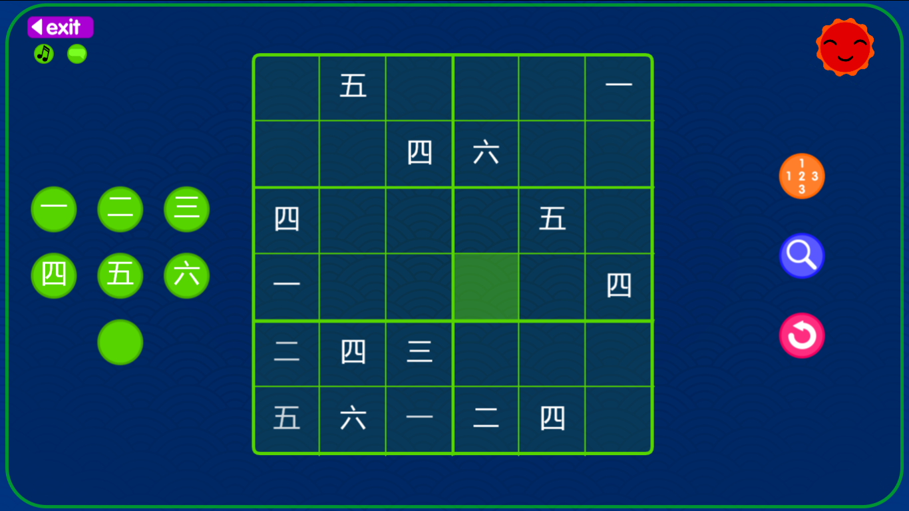
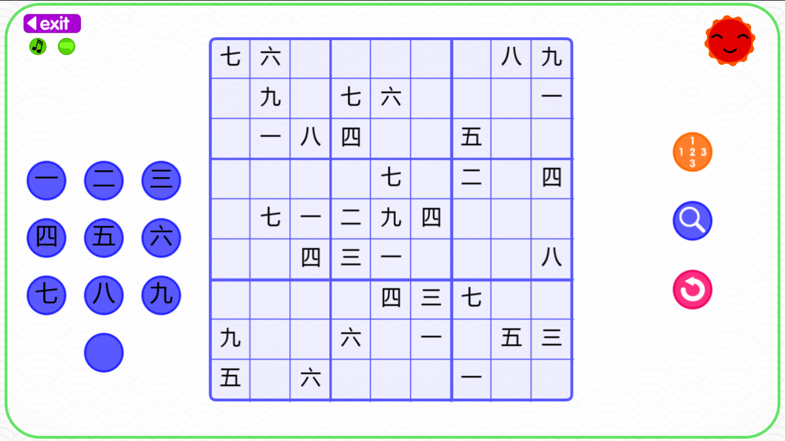
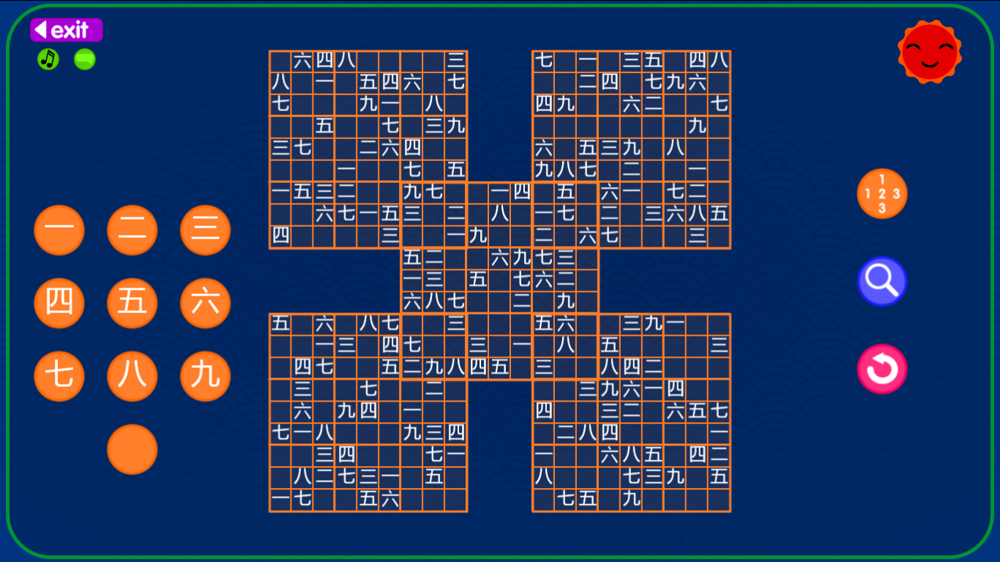
Learn and practice Japanese number kanji at your own pace.
With over 50 levels and 4 game modes, you'll learn Japanese number kanji while enjoying a real Sudoku challenge.
Play Sudoku your way: 4x4, 6x6, 9x9 and Samurai Sudoku all await you!
As you play, you'll become adept at reading and differentiating between Japanese kanji.
It's a perfect jumping-off point for learning more difficult Japanese kanji.
Let's Learn Shogi
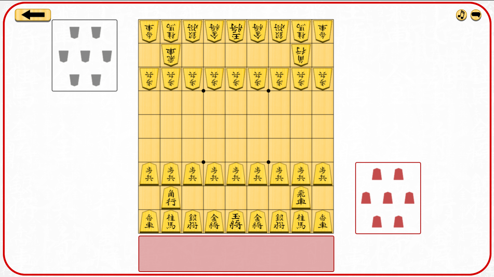
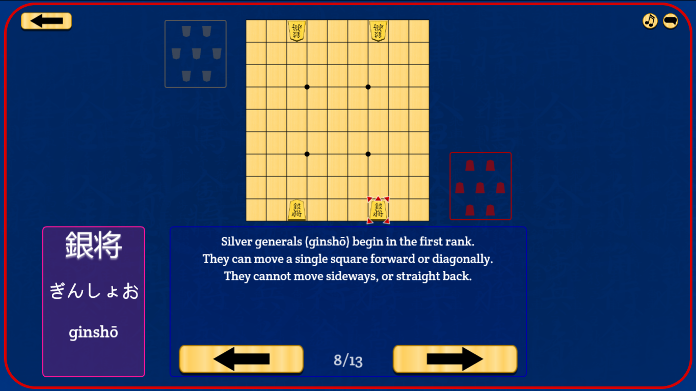
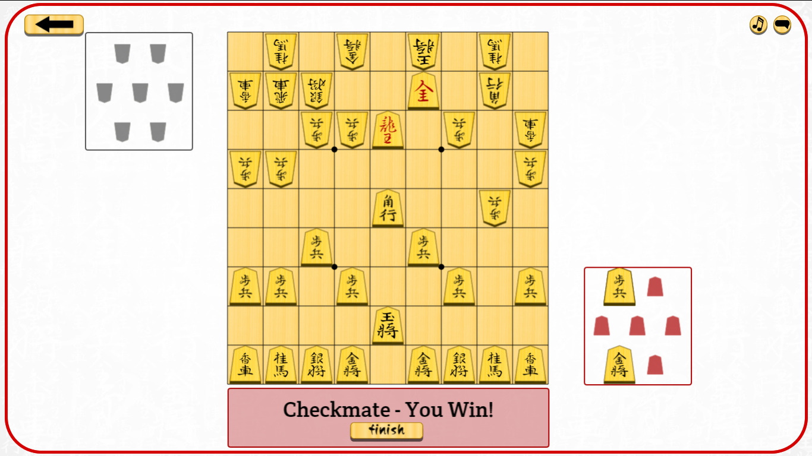
Learn the traditional Japanese game of Shogi.
Examine all aspects of the ancient strategy game, including the Japanese names of important game elements.
Play against a wide variety of AI opponents, at a level of your choosing.
Challenge yourself with over 60 Tsume Shogi puzzles and become an expert in endgame strategy.
Super Kakuro
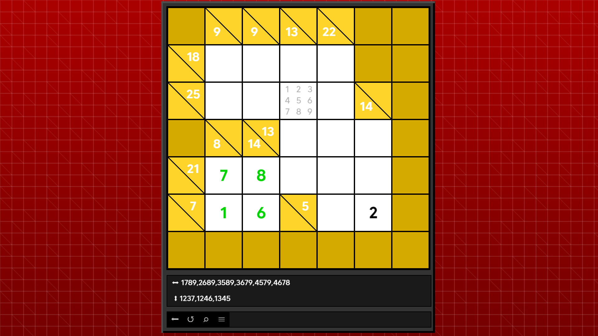
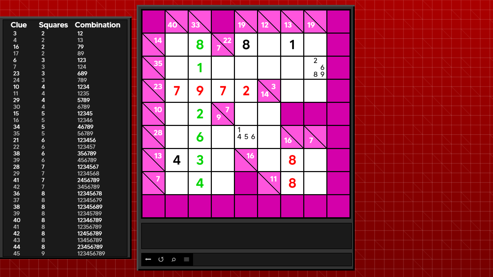
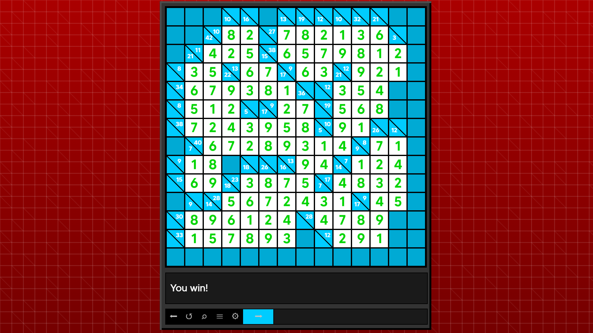
Also known as Cross Sums, Kakuro is a math-and-logic puzzle which increases players' IQ and problem-solving skills.
Get started by learning the rules of Kakuro, as well as tactics for taking on the very hardest boards.
Solve over 300 unique levels, with 12 different board sizes.
Create an endless combination of kakuro boards with the random level generator.
Use helpful clues and in-game assistance to resolve difficult situations, or play without assistance for an even greater challenge.